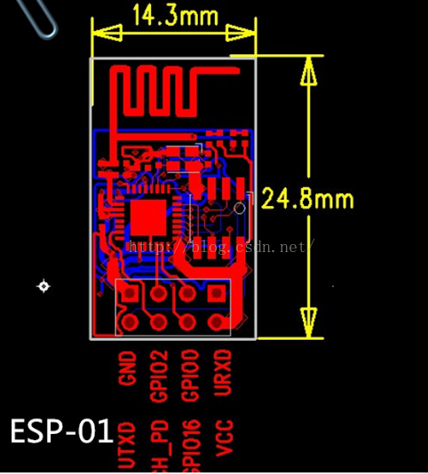
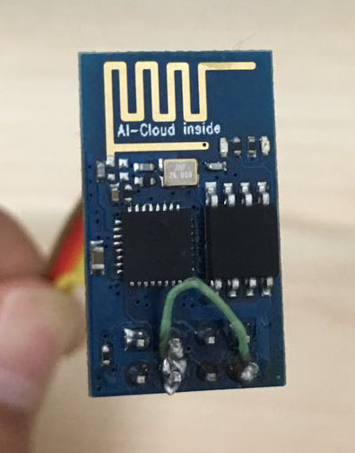
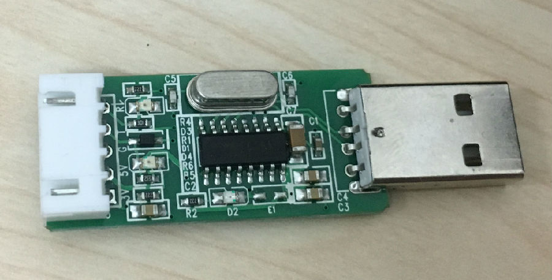
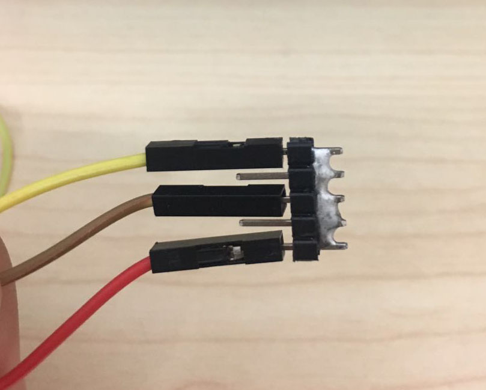

手里的模块是ESP-01
具体选项和文档见官网：http://wiki.ai-thinker.com
一：接线

查阅手册可知，正常工作时：
VCC -------------3.3
GND -------------GND
CH_PD-------------3.3
RX -------------TX
TX -------------Rx
其余引脚为空。
烧写时：
GPIO0接地。
为了方便使用，我直接将CH_PD和VCC焊在了一起，烧写时只需要把GPIO0引出接到地。
调试的时候用的CH340 USB转串口，网上很多地方强调对电源要求高，最好用五号电池，15年和现在实测直接接USB转串口模块没问题。



为了烧录方便，把排阵连通做为GND，烧录的时候GPIO0接GND，工作模式直接GPIO0悬空。
此时连接电脑，波特率选择115200，8位数据位，1位停止位，无奇偶校验位，即可进行AT指令测试。
二：开发环境
这次使用发现了Arduino IDE 也可以用来开发ESP8266了，而且完全是Arduino风格。
首先 下载Arduino IDE-文件-首选项-附加开发板管理网址-http://wechat.doit.am/package_esp8266com_index.json-保存。
然后 工具-开发板-开发板管理器-esp8266 by ESP8266 Community-选择2.0-下载。
下载时开发板选择Generic ESP8266 Module CPU 频率 80 MHz。
三：编写程序
这里我编写了两个透传的程序，都是作为station模式连接电脑共享的WIFI。
第一个，ESP8266作为TCP客户端进行透传
#include <ESP8266WiFi.h>
const char *ssid = "WIFISSID";
const char *password = "PASSWORD";
const char *host = "192.168.191.1";//要连接的TCP服务器IP
WiFiClient client;
const int tcpPort = 8080;//TCP服务器的端口号
void setup()
{
Serial.begin(115200);
delay(10);
Serial.println();
Serial.println();
Serial.print("Connecting to ");
Serial.println(ssid);
WiFi.begin(ssid, password);
while (WiFi.status() != WL_CONNECTED)
{
delay(500);
Serial.print(".");
}
Serial.println("");
Serial.println("WiFi connected");
Serial.println("IP address: ");
Serial.println(WiFi.localIP());
}
void loop()
{
while (!client.connected())
{
if (!client.connect(host, tcpPort))
{
Serial.println("connection....");
//client.stop();
delay(500);
}
}
while (client.available())
{
uint8_t c = client.read();
Serial.write(c);
}
if (Serial.available())
{
size_t counti = Serial.available();
uint8_t sbuf[counti];
Serial.readBytes(sbuf, counti);
client.write(sbuf, counti);
}
}第二个，ESP8266作为TCP服务端进行透传
#include <ESP8266WiFi.h>
const char *ssid = "WIFISSID";
const char *password = "PASSWORD";
const int tcpPort = 80;//要建立的TCP服务的端口号
WiFiServer server(tcpPort);
void setup()
{
Serial.begin(115200);
delay(10);
Serial.println();
Serial.println();
Serial.print("Connecting to ");
Serial.println(ssid);
WiFi.begin(ssid, password);
while (WiFi.status() != WL_CONNECTED)
{
delay(500);
Serial.print(".");
}
Serial.println("");
Serial.println("WiFi connected");
Serial.println("IP address: ");
Serial.println(WiFi.localIP());
server.begin();
}
void loop()
{
WiFiClient client = server.available();
if (client) {
while (client.connected()) {
if (client.available()) {
char c = client.read();
Serial.write(c);
}
if (Serial.available())
{
size_t counti = Serial.available();
uint8_t sbuf[counti];
Serial.readBytes(sbuf, counti);
client.write(sbuf, counti);
}
}
delay(1);
client.stop();
}
}官方文档：http://esp8266.github.io/Arduino/versions/2.0.0/doc/libraries.html#wifiesp8266wifi-library